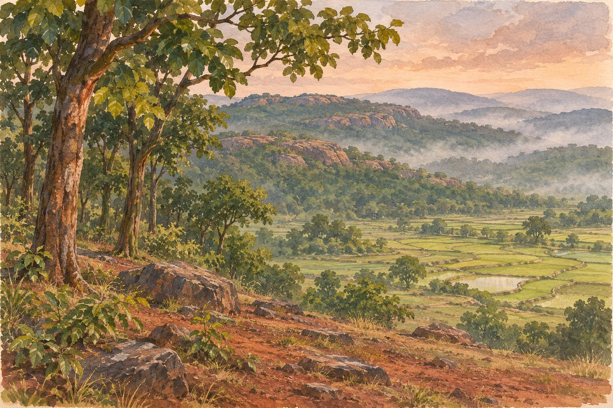
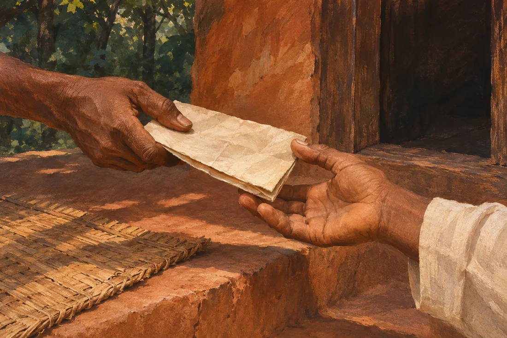
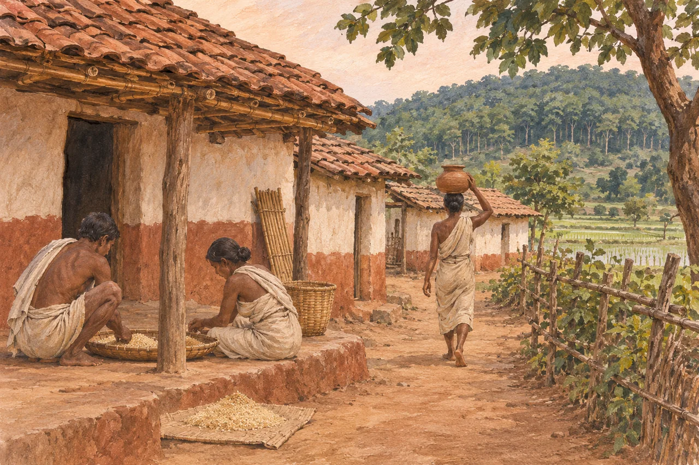
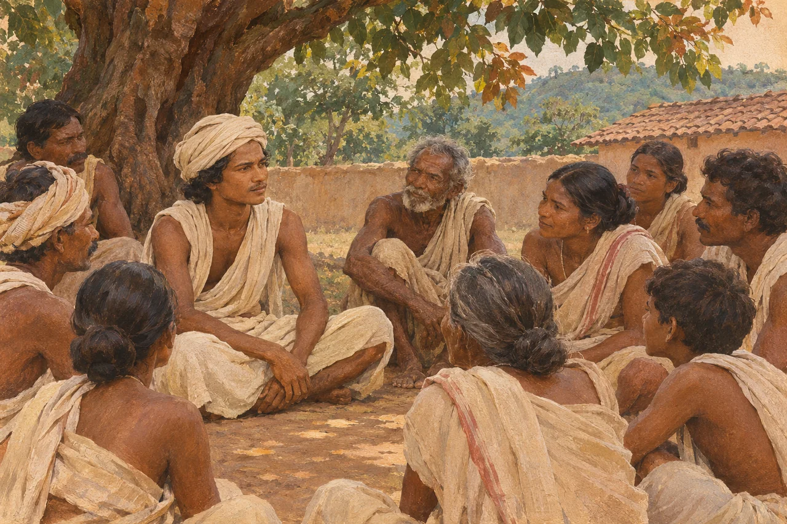
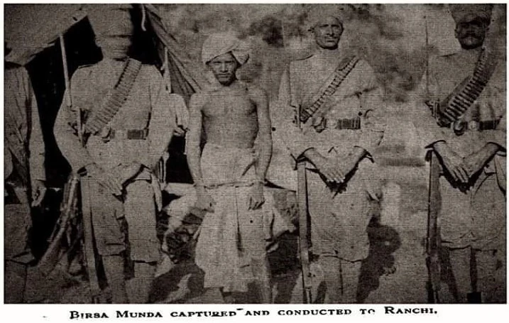
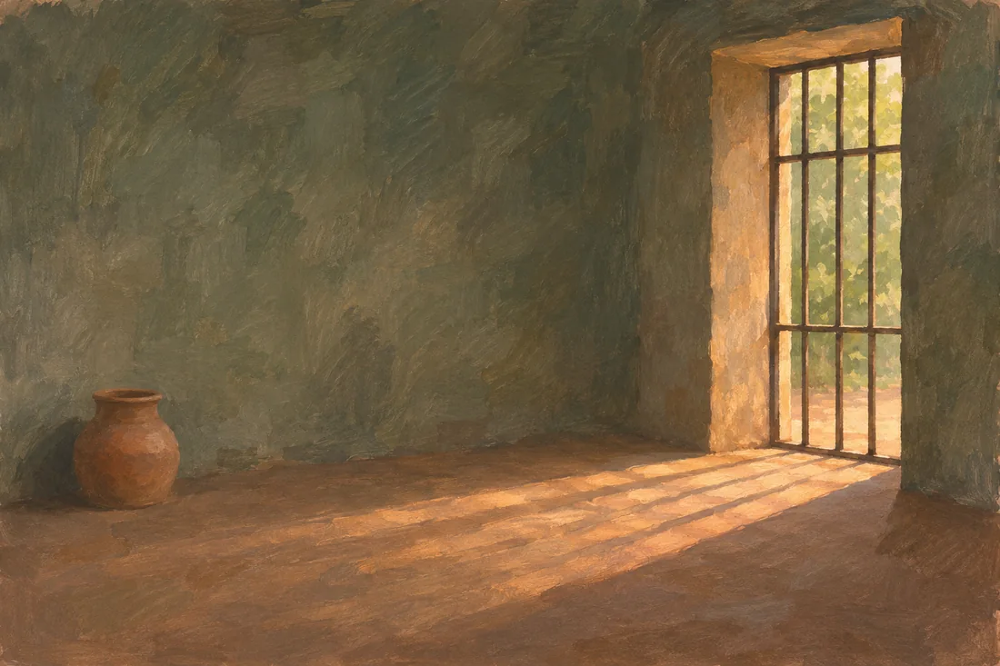
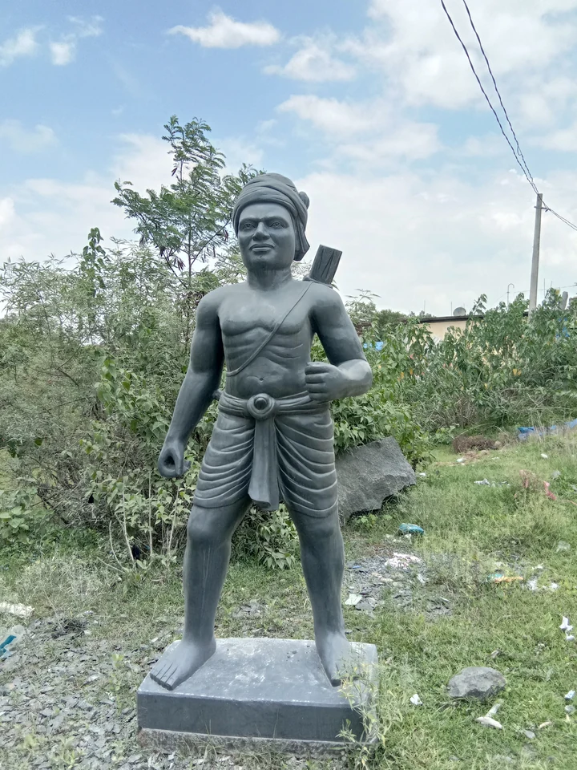

.JPG){kind=link}
धरती और उसके लोग
राँची से दक्षिण की ओर छोटानागपुर के पठार में कहीं जंगल से ढकी पहाड़ियाँ हैं, कहीं नीचे खेती की ज़मीन और उनके बीच बस्तियाँ। उन्नीसवीं सदी के आख़िरी वर्षों में बिरसा के आंदोलन का गहरा संबंध खूँटी और तमाड़ से था। उसकी पहुँच सिंहभूम तक भी थी। पठार पर अनेक समुदाय रहते थे। मुंडारी बोलने वाले मुंडाओं की अपनी संस्थाएँ और अपना इतिहास था। उराँव, खड़िया, संताल और हो समुदायों के इतिहास और व्यवस्थाएँ भी अपनी-अपनी थीं। ‘आदिवासी’ शब्द इन भिन्नताओं के बीच एक साझा राजनीतिक पहचान व्यक्त कर सकता है। यहाँ शुरुआत उन मुंडा गाँवों से करें जहाँ बिरसा का आंदोलन आकार ले रहा था।
मुंडारी ग्राम-व्यवस्था के वर्णनों में गाँव के मुखिया को मुंडा कहा जा सकता था। मानकी की ज़िम्मेदारी कई गाँवों तक हो सकती थी, और ग्राम-अनुष्ठानों के कुछ काम पाहन के ज़िम्मे थे। इन पदों का व्यवहार जगह के अनुसार बदल सकता था। गाँव कामकाज की इकाई भी था। अलग-अलग मौसम में एक ही घर का गुज़ारा खेती, वन-उपज और चराई से चलता था। इसलिए किसी खेत पर दावे के साथ आसपास की ज़मीन के इस्तेमाल, लगान के भुगतान और फ़सल चौपट होने पर फ़ैसला लेने के अधिकार का सवाल भी जुड़ा था। रॉय, अध्याय 2 और 6 चंद्र, पृ. 6–14

खूँटकट्टी का अर्थ
खूँटकट्टी में ज़मीन पर हक़ उन वंशों से जुड़े थे जिन्होंने जंगल साफ़ कर बस्ती बसाई थी। कोई परिवार अपना खेत जोत सकता था और साथ ही संस्थापक परिवारों के कुछ व्यापक अधिकार बने रह सकते थे। बाद में आकर बसे परिवारों की स्थिति अलग हो सकती थी। इसे आधुनिक निजी मालिकाने के बराबर रख देने से गाँव और वंश से जुड़े हक़ समझ में नहीं आते। इसे ऐसी साझी व्यवस्था मान लेने से भी भूल होगी जिसमें हर परिवार का हिस्सा बराबर था। इस प्रथा के सहारे लोग बताते थे कि उनका अपना हक़ क्या है और दूसरों के प्रति उनकी क्या ज़िम्मेदारी है।
ज़मीन से बेदखली का इतिहास अंग्रेज़ी राज से पहले शुरू हो चुका था। औपनिवेशिक राजस्व और अदालतों की व्यवस्था ने लगान के दावों और उन्हें वसूलने वाले कुछ बिचौलियों को और ताक़त दी। जगह के अनुसार किसानों का सामना ज़मींदारों, ठेकेदारों और महाजनों से होता था। कर्ज़ निर्भरता बढ़ा सकता था। बढ़ते लगान और बेठ-बेगारी, यानी अनिवार्य सेवा, के बीच अपने खेत सँभालना मुश्किल होता गया। वन-प्रशासन में बदलाव ने कुछ परंपरागत इस्तेमालों पर भी रोक या दबाव बढ़ाया। दिकू उस बाहरी व्यक्ति के लिए कहा जा सकता था जिसे लोग शोषक मानते थे। इसका अर्थ समझने के लिए देखें कि यह शब्द किसने, किसके लिए और किस परिस्थिति में कहा।
बिरसा के उभरने से पहले ही सरदार कहलाने वाले मुंडा नेताओं ने ज़मीन के अधिकारों के लिए लंबा संघर्ष किया था। उन्होंने अर्ज़ियाँ दीं, मुक़दमे लड़े और कभी-कभी मिशनरियों की मदद ली। इसके लिए पैसे, यात्राएँ और नए प्रशासन के नियम सीखने वाले लोगों की ज़रूरत थी। ईसाई धर्म अपनाने वाले कुछ आदिवासी सरदारी लड़ाई में सक्रिय थे। उनका साथ दिखाता है कि धार्मिक निष्ठा बदलने पर भी मुंडा ज़मीन की रक्षा उनके लिए उतनी ही अहम रह सकती थी। बिरसा उस संघर्ष से जुड़े जिसमें दशकों की मेहनत और निराशा पहले से जमा थी। दास गुप्ता बारा, पृ. 11–14

बचपन और पढ़ाई
भारत सरकार वर्तमान खूँटी ज़िले के उलिहातू को बिरसा की जन्मस्थली के रूप में स्मरण करती है। शहीदों की जीवनी-सूची में जन्म की तारीख़ 15 नवंबर 1875 और माता-पिता के नाम सुगना और करमी मुंडा दिए गए हैं। बिरसा खेती करने वाले परिवार में बड़े हुए। जन्म के ब्योरे पर विद्वानों में मतभेद हैं। उदय चंद्र 1872 से 1875 तक के अलग-अलग जन्म-वर्ष और उलिहातू तथा चालकद, दोनों से जुड़े दावों का ज़िक्र करते हैं। यहाँ प्रचलित स्मारक कालक्रम का इस्तेमाल किया गया है। उस हिसाब से मृत्यु के समय उनकी उम्र चौबीस साल थी। जीवनी-सूची, पृ. 77 चंद्र, पृ. 20–21

बिरसा ने चाईबासा में जर्मन लूथरन मिशन के स्कूल में पढ़ाई की। वहाँ ईसाई शिक्षाओं से परिचय हुआ और यह भी देखने को मिला कि शिक्षा और ज़मीन की राजनीति कैसे जुड़ सकती थीं। चंद्र बताते हैं कि मिशन से खोई ज़मीन वापस पाने में मदद की आशा थी, लेकिन आगे चलकर मिशन और सरदारों में मतभेद बढ़े। बिरसा ने लगभग 1890–91 में स्कूल छोड़ा। स्रोतों में वर्ष का थोड़ा अंतर है। परिवार के अलग-अलग सदस्यों की धार्मिक संबद्धता बदलने की कहानी को भी एक ही घटना में समेटना मुश्किल है। चंद्र, पृ. 21–22 जीवनी-सूची, पृ. 77
चाईबासा के बाद बंदगाँव के इलाके में बिरसा ने आनंद पाँड़े के साथ समय बिताया और वैष्णव आचारों से परिचित हुए। शहीदों की जीवनी-सूची में वन-देय माफ़ करने की अर्ज़ी चाईबासा ले जाने में उनकी भूमिका का भी उल्लेख है। इन प्रसंगों से एक युवा के सामने मौजूद रास्तों की झलक मिलती है। पढ़ाई, दूसरे घर में काम, धार्मिक शिक्षकों से संपर्क और गाँव की माँगों में भागीदारी उसी बदलते इलाके के अनुभव थे। इन्हें साथ देखने पर बिरसा के विचारों की पृष्ठभूमि बेहतर समझ आती है। चंद्र, पृ. 21–22 जीवनी-सूची, पृ. 77
धरती आबा का उदय
1895 तक चालकद में लोग बिरसा के पास जुटने लगे थे। रोग दूर करने की चर्चाओं और एक शिक्षक के रूप में उनकी प्रतिष्ठा ने अनुयायियों को आकर्षित किया। धरती आबा, जिसका प्रचलित अर्थ ‘धरती के पिता’ है, और भगवान बिरसा जैसे संबोधन अनुयायियों की श्रद्धा व्यक्त करते हैं। इतिहास में यह दर्ज किया जा सकता है कि लोग उनके पास सहायता लेने आए और उन्हें ये नाम दिए। दर्शन और चमत्कारिक उपचार की कथाएँ बताती हैं कि अनुयायियों या देखने वालों ने इन घटनाओं को कैसे समझा। ये कथाएँ उनके प्रति आस्था और उनके प्रभाव के इतिहास का हिस्सा हैं। बारा, पृ. 11–13 राइक्रॉफ्ट

बिरसा की शिक्षाएँ रोज़मर्रा के आचरण और उपासना में बदलाव की बात करती थीं। विवरणों में प्रार्थना, नशे से परहेज़ और कुछ बलि-प्रथाओं के विरोध का उल्लेख है। ये ब्योरे मिशनरियों, सरकारी अधिकारियों और अनुयायियों जैसे अलग-अलग दृष्टि रखने वाले लोगों के ज़रिए पहुँचे हैं। बिरसाइत परंपरा या बिरसा धरम में ईसाई मिशन और वैष्णव आचारों के अनुभव मुंडा समाज और उसकी नैतिक समझ से मिले। इसकी अपनी धार्मिक पहचान बनी और बिरसा की मृत्यु के बाद भी कुछ अनुयायियों ने इसे आगे बढ़ाया। किसी एक प्रभाव से इसकी पूरी व्याख्या नहीं हो सकती। दास गुप्ता रंजन, पृ. 9–10 और अध्याय 5
बिरसा के साथ धार्मिक अधिकार का सवाल सार्वजनिक जीवन से जुड़ा। यदि समुदाय अपने जीने और पूजा करने का ढंग तय कर सकता है, तो वह यह भी पूछ सकता है कि लगान या श्रम की माँग करने का हक़ किसे है। नए लोगों के जुड़ने के साथ सुधार, उपचार और राजनीतिक कार्रवाई का आपसी संबंध बदलता गया। कुछ लोग सरदारी लड़ाई से आए थे। कुछ नाते-रिश्ते, आस्था या एक ही इलाके में रहने के कारण जुड़े। 1895 में अधिकारियों ने बिरसा को जेल भेजा। 1897 में रिहाई के बाद बैठकें और संगठन फिर शुरू हुए। पहली गिरफ़्तारी का यह दौर बताता है कि कुछ इतिहासकार आंदोलन की शुरुआत 1895 से क्यों गिनते हैं। जीवनी-सूची, पृ. 77 चंद्र, पृ. 21–26
उलगुलान, 1899–1900
उलगुलान का प्रचलित अर्थ ‘महाविद्रोह’ या ‘बड़ी उथल-पुथल’ है। यहाँ 1899–1900 से आशय उस छोटे दौर से है जिसमें सशस्त्र संघर्ष अपने चरम पर था। आंदोलन की ज़मीन पहले से तैयार हो रही थी। बढ़ते लगान या जंगल के इस्तेमाल पर रोक का सामना कर रहे किसानों के लिए ज़मीन का विवाद गाँव में टिक पाने का सवाल था। पहले अर्ज़ियाँ दे चुके लोगों के मन में एक और प्रश्न था। जिन संस्थाओं ने इन माँगों को बल दिया था, उन्हीं से राहत की कितनी उम्मीद की जा सकती थी? मुंडा राज की बिरसा की पुकार ने इस सवाल को स्वशासन से जोड़ा। दास गुप्ता बारा, पृ. 12–15
बैठकों से खुले प्रतिरोध तक
1899 में लोगों को संगठित करने का काम तेज़ हुआ। जोसेफ बारा अक्टूबर में डुंबारी बुरू में हुई एक बैठक के बारे में अदालत में दी गई गवाही पर चर्चा करते हैं। उसमें ज़मींदारों और ठेकेदारों की शिकायतें प्रमुख थीं। गवाही बताती है कि विवाद में क्या दाँव पर था। उसे उस औपनिवेशिक मुक़दमे और उसकी कार्यवाही की परिस्थितियों में भी पढ़ना चाहिए। पड़ोसियों को साथ लाने वाले कई लोगों के पास अपना लिखित वृत्तांत छोड़ने का साधन नहीं था। शहीदों की जीवनी-सूची महिलाओं को संगठित करने का श्रेय साली नाम की एक महिला को देती है। अंजना सिंह अदालती कार्यवाही और स्मारकों से एक दूसरा सूत्र पकड़ती हैं। उनके अध्ययन में इटकाडीह के प्रतिरोध में माकी मुंडा की भूमिका और उनकी क़ैद दर्ज है, जबकि उसी परिवार की कुछ महिलाओं के अपने नाम तक दर्ज नहीं हुए। दोनों विवरण साथ पढ़ने से दिखता है कि पुलिस की कार्रवाई या सबसे प्रसिद्ध नेताओं पर नज़र टिकाने से आंदोलन में कई लोगों की मेहनत और उसकी क़ीमत छूट जाती है। बारा, पृ. 13–14 जीवनी-सूची, पृ. 77 अंजना सिंह, पृ. 45, 49–51
दिसंबर 1899 के आख़िरी दिनों में कई जगह हमलों की ख़बरें आईं। इनमें मिशन से जुड़े ठिकाने और ईसाई परिवार भी निशाने पर आए। जनवरी के शुरू में संघर्ष थानों तक पहुँचा। सरकारी अभिलेखों के चंद्र के अध्ययन के अनुसार 6 जनवरी 1900 को खूँटी थाने पर हमला हुआ और एक मुंडा सिपाही मारा गया। संघर्ष के अलग-अलग पक्षों के लोग एक ही समुदाय से भी हो सकते थे। बारा औपनिवेशिक सत्ता को चुनौती और स्वशासन की माँग पर ज़ोर देते हैं। चंद्र पहले की राजनीतिक बातचीत और गाँवों के भीतर अधिकार तथा धार्मिक निष्ठा को लेकर हुए टकरावों पर ध्यान दिलाते हैं। दोनों को साथ पढ़ने से समझ आता है कि स्वतंत्रता के संघर्ष के रूप में याद किए जाने वाले विद्रोह के अपने इलाके में भी पीड़ादायक परिणाम थे। चंद्र, पृ. 23–27 बारा, पृ. 13–17
डोंबारी बुरू और सैल रकब
- दिसंबर 1899 के आख़िरी दिनसशस्त्र विद्रोह शुरू हुआ।
- 6 जनवरी 1900खूँटी थाने पर हमले की ख़बर दर्ज हुई।
- 9 जनवरी 1900औपनिवेशिक बलों ने डोंबारी के पास सैल रकब में जुटे लोगों पर गोली चलाई।
- 1900 के शुरुआती महीनेतलाशी, गिरफ़्तारी और आत्मसमर्पण का दौर चला।
तारीख़ों के स्रोत: चंद्र का अभिलेखीय अध्ययन और शहीदों की जीवनी-सूची।
9 जनवरी 1900 को औपनिवेशिक बलों ने सैल रकब पहाड़ी पर जुटे बिरसा के अनुयायियों पर गोली चलाई। शहीदों की जीवनी-सूची सैल रकब को डोंबारी के पास बताती है। घटना की स्मृति प्रायः डोंबारी बुरू के नाम से जुड़ी है, जिसे डुंबारी बुरू भी लिखा जाता है। दोनों नाम साथ रखने से सैन्य वृत्तांत और स्मृति-परंपरा को समझने में मदद मिलती है। हर विवरण में ठीक वही स्थान अभिप्रेत था, यह मानना ज़रूरी नहीं। गोलीबारी से सभा तितर-बितर हुई। बिरसा उस कार्रवाई में पकड़े नहीं गए।
गोलीबारी के बाद तलाशी, गिरफ़्तारी, आत्मसमर्पण और मुक़दमों का दौर चला। सरकार सभा भंग कर सकती थी और अनुयायियों पर अलग-अलग मुक़दमे चला सकती थी। सजाओं का असर उनके परिवारों और गाँवों पर पड़ा। खुला सशस्त्र आंदोलन दबा दिया गया। ज़मीन के हक़ और बेगारी के सवाल बाद की जाँच, बंदोबस्त और क़ानून में उठते रहे। राजनीतिक हार और भूमि-प्रशासन में आए बदलाव इसी इतिहास के हिस्से हैं। दास गुप्ता रॉय, अध्याय 5
गिरफ़्तारी और अंतिम दिन
जनवरी की कार्रवाई के बाद सिंहभूम के जंगलों में तलाश जारी रही। आधुनिक शहीदों की जीवनी-सूची के अनुसार बिरसा 3 मार्च 1900 को चक्रधरपुर के इलाके में जमकोपाई के जंगल में सोते समय पकड़े गए। अंजना सिंह 3 फ़रवरी की तारीख़ देती हैं। उनके विवरण में भी बिरसा सोते समय पकड़े गए और उनके परिवार की महिलाएँ वहाँ थीं। इंडियन एक्सप्रेस भी 3 फ़रवरी देता है और पोराहाट के जंगलों का व्यापक उल्लेख करता है। महीना अलग है और पकड़े जाने की परिस्थिति तथा वहाँ मौजूद लोगों का ब्यौरा भी हर स्रोत में एक-सा नहीं है। इसलिए घटनाक्रम में ‘1900 के शुरुआती महीने’ लिखा गया है और तारीख़ का मतभेद यहाँ दर्ज है। जीवनी-सूची, पृ. 77 इंडियन एक्सप्रेस अंजना सिंह, पृ. 45



उलगुलान की विरासत
बाद के सर्वेक्षण और बंदोबस्त में अधिकारियों ने भूमि-अधिकारों की उन श्रेणियों को दर्ज किया जिन्हें पहले पर्याप्त मान्यता नहीं मिली थी। छोटानागपुर काश्तकारी अधिनियम, 1908 ने ज़मींदारों, काश्तकारों और लगान से जुड़े नियमों को एक जगह समेटा। धाराएँ 7 और 8 दो संबंधित लेकिन अलग श्रेणियाँ बताती हैं। एक है खूँटकट्टी अधिकार वाले रैयत और दूसरी मुंडारी खूँटकट्टीदार। अध्याय 18 में दूसरी श्रेणी के लिए विशेष प्रावधान हैं। धारा 240 हस्तांतरण पर कड़े प्रतिबंध लगाती है और अपवाद तथा शर्तें भी बताती है। किसी प्रथा को क़ानूनी मान्यता मिलने का अर्थ यह नहीं कि गाँव के हर दावे को एक ही क़ानूनी अधिकार मिल गया। अधिनियम, धाराएँ 7–8 और 239–250 दास गुप्ता
संस्थापक वंश, खेती और स्थानीय दायित्व
अधिकारों की श्रेणियाँ बनीं और उन्हें दर्ज किया गया
श्रेणियों की परिभाषा और कुछ हस्तांतरणों पर रोक
विधानमंडल ने यह क़ानून बिरसा की मृत्यु के बाद बनाया। उनके आंदोलन, उससे पहले के दशकों के किसान संघर्ष और सरकारी जाँचों ने सुधारों की पृष्ठभूमि बनाई। क़ानूनी मान्यता का असर था, लेकिन उसका लाभ इस पर निर्भर करता था कि किसका हक़ किस श्रेणी में दर्ज हुआ और वह उसे लागू करा पाया या नहीं। ज़मीन और जंगल तक पहुँच, स्थानीय संस्थाओं के अधिकार और समुदाय की सहमति के सवाल किसी एक बंदोबस्त के साथ समाप्त नहीं हुए। अधिनियम बारा, पृ. 18–20 रंजन, भूमिका
बीसवीं सदी में जयपाल सिंह मुंडा और झारखंड के लिए चले आदिवासी आंदोलन ने बिरसा की स्मृति को फिर राजनीतिक मंचों पर पहुँचाया। बारा दिखाते हैं कि उनके प्रकाशनों और सभाओं में उलगुलान का ज़िक्र प्रतिनिधित्व और क्षेत्रीय स्वशासन की बहस से कैसे जुड़ा। बिहार पुनर्गठन अधिनियम के तहत को झारखंड अलग राज्य बना। इसके पीछे दशकों का संगठन और कई समूहों की साझेदारी थी। बिरसा को याद करने वालों के लिए यह नाम राजनीतिक प्रतिनिधित्व को ज़मीन और सामुदायिक मामलों पर अधिकार की पुरानी माँग से जोड़ता था। बारा, पृ. 4–6 और 18–20 बिहार पुनर्गठन अधिनियम, धारा 3
ऐतिहासिक स्मृति में बिरसा मुंडा


आरंभिक मुद्रित विवरणों का बड़ा हिस्सा उन लोगों ने बनाया जिनके पास तस्वीर लेने, वर्गीकरण करने या मुक़दमा चलाने की ताक़त थी। मुंडा परिवारों में आगे बढ़े गीत और वृत्तांत दूसरी दृष्टियाँ सँजोते हैं। उनका अपना इतिहास भी है। भाषाविद् रामदयाल मुंडा और नॉर्मन एच. ज़ाइड ने बिरसा और उनके आंदोलन पर गीत दर्ज किए। बारा एक गीत के ज़रिए दिखाते हैं कि गाने वालों ने बिरसा को अदालतों, पूजा के स्थलों और सत्ता के पुराने केंद्रों से भरे भूगोल में कैसे याद किया। इन गीतों से पता चलता है कि अगली पीढ़ियों को क्या याद रखना ज़रूरी लगा। उनकी पंक्तियों को 1899 की शब्दशः गवाही मानना गीत की प्रकृति को भूलना होगा। अभिलेखागार की सूची बारा, पृ. 13–15
राहुल रंजन प्रतिमाओं, स्मृति-स्थलों और पत्थरों पर दर्ज लेखों में बिरसा की छवि का अध्ययन करते हैं। समुदाय की बनाई छवि, सरकार का स्मारक और गीत में याद किया गया व्यक्ति अतीत के अलग पहलू सामने ला सकते हैं। प्रतिमा विद्रोही की छवि को स्थायी कर सकती है। स्मृति-स्थल उस जगह की ओर लौटाता है जहाँ परिवारों ने अपनों को खोया या जहाँ लोग आज भी इकट्ठे होते हैं। पाठ्यपुस्तकें और राँची के बिरसा कृषि विश्वविद्यालय जैसी संस्थाएँ भी उनका नाम अगली पीढ़ी तक ले जाती हैं। ‘भगवान’ अनुयायियों के लिए श्रद्धा का संबोधन है। किसी सरकारी संस्था के नाम में भी उसका दिखना बताता है कि वह संबोधन अब एक और संदर्भ में इस्तेमाल होता है। रंजन, भूमिका बिरसा कृषि विश्वविद्यालय
महाश्वेता देवी के बांग्ला उपन्यास अरण्येर अधिकार, जिसका हिंदी अनुवाद जंगल के दावेदार है, ने इस संघर्ष को साहित्यिक स्मृति में जगह दी। उपन्यास पाठक से ऐसे अतीत की कल्पना करने को कह सकता है जिसमें सरकारी फ़ाइलों में दर्ज लोगों की अपनी आवाज़ कम सुनाई देती है। यह इतिहास के साथ पढ़ी जाने वाली एक साहित्यिक व्याख्या है। इस लेख के आरंभ में दी तस्वीर भी ऐसा ही एक सवाल उठाती है। उसका शुरुआती मुद्रित स्रोत मिल जाता है, लेकिन किन परिस्थितियों में उसे खींचा गया, इस पर बहस है। इसलिए उसके साथ प्रकाशन का स्रोत दिया गया है। बारा, पृ. 8–9 राइक्रॉफ्ट
जनजातीय गौरव दिवस · 15 नवंबर
2021 में केंद्रीय मंत्रिमंडल ने स्वतंत्रता संघर्ष में आदिवासी योगदान के सम्मान में हर साल 15 नवंबर को जनजातीय गौरव दिवस मनाने का निर्णय लिया। पहले आयोजन में राँची के भगवान बिरसा मुंडा स्मृति उद्यान और स्वतंत्रता सेनानी संग्रहालय का उद्घाटन हुआ। यही तारीख़ बिरसा की मान्य जयंती और झारखंड के गठन की भी है। ये स्मरण इस इतिहास को देश भर के लोगों तक पहुँचाते हैं। इसे समझने की शुरुआत मुंडा समुदायों के अपने इतिहास और ज़मीन, धर्म तथा अधिकार के उनके अनुभवों से हो सकती है। मंत्रिमंडल का निर्णय जनजातीय कार्य मंत्रालय
संपादकीय चिंतन
मेरे मन में खेत जोतने और उसका भविष्य तय करने के बीच की दूरी रह जाती है। कोई परिवार पीढ़ियों तक किसी जगह को रहने लायक बनाता है, उसे सँभालता है और फिर पाता है कि किसी दूसरी संस्था ने उसके हक़ ऐसे शब्दों में लिख दिए हैं जो उसे अपने अनुभव से मेल खाते नहीं लगते। बिरसा का इतिहास इस दूरी को सामने लाता है। यह उनसे भी सवाल करता है जिनके पास आज यह तय करने की ताक़त है कि अतीत की कौन-सी बातें याद रखी जाएँगी। सुनने की शुरुआत इस प्रश्न से हो सकती है कि किसी जगह के बारे में कौन, किस भाषा में और किस अधिकार से बोल पाता है।
ऐतिहासिक घटनाक्रम
संदर्भ और संबंधित भाग का लिंक देखने के लिए किसी घटना को खोलें।
मान्य जन्मतिथि
प्रचलित स्मारक परंपरा 15 नवंबर और उलिहातू को मानती है। जन्म का विवरण स्रोतों में अलग है। संबंधित भाग पढ़ें
1890 का दशक सुधार और संगठन
बिरसा के साथ अनुयायी जुड़ते हैं। 1895 में गिरफ़्तारी और 1897 में रिहाई होती है। संबंधित भाग पढ़ें
खुला विद्रोह
हमलों की ख़बरें अधिकारियों तक पहुँचती हैं। उलगुलान का सशस्त्र दौर शुरू होता है। संबंधित भाग पढ़ें
सैल रकब में गोलीबारी
औपनिवेशिक बल डोंबारी के पास जुटे लोगों पर गोली चलाते हैं। मृतकों की संख्या विवादित है। संबंधित भाग पढ़ें
1900 के शुरुआती महीने सिंहभूम में गिरफ़्तारी
विवरणों में 3 फ़रवरी और 3 मार्च की तारीख़ें मिलती हैं। बिरसा को राँची की जेल में रखा जाता है। संबंधित भाग पढ़ें
हिरासत में मृत्यु
राँची की जेल में बिरसा की मृत्यु होती है। दर्ज बीमारी और उस पर उठे सवाल अलग-अलग हैं। संबंधित भाग पढ़ें
छोटानागपुर काश्तकारी अधिनियम
क़ानून भूमि-अधिकारों की कई श्रेणियाँ तय करता है और मुंडारी खूँटकट्टीदारी के लिए विशेष शर्तें रखता है। संबंधित भाग पढ़ें
झारखंड राज्य का गठन
बिहार पुनर्गठन अधिनियम नियत दिन से प्रभावी होता है। संबंधित भाग पढ़ें
पहला जनजातीय गौरव दिवस
उसी महीने के मंत्रिमंडल के निर्णय के बाद पहली बार देश भर में यह दिवस मनाया जाता है। संबंधित भाग पढ़ें
शब्दावली
- उलगुलान
- बड़ी उथल-पुथल या महाविद्रोह। बिरसा के आंदोलन का नाम, जिसका प्रयोग कभी विशेष रूप से सशस्त्र दौर के लिए होता है।
- खूँटकट्टी
- बस्ती और खेती के लिए जंगल साफ़ करने वाले संस्थापक वंशों से भूमि के हक़ जोड़ने वाली प्रथा।
- दिकू
- बाहरी व्यक्ति। इन संघर्षों में ख़ास तौर पर उसके लिए जिसे लोग शोषक मानते थे।
- बेगारी
- अनिवार्य श्रम या सेवा, जो अक्सर बिना मेहनताने के ली जाती थी।
- बिरसाइत
- बिरसा के धार्मिक आंदोलन का अनुयायी। बिरसा धरम से जुड़े समुदाय के लिए भी प्रयुक्त शब्द।
- धरती आबा
- धरती के पिता। बिरसा के लिए श्रद्धा से इस्तेमाल किया जाने वाला संबोधन।
स्रोत और आगे का अध्ययन
- जोसेफ बारा, “बिरसा मुंडा ऐंड द नेशन”, जर्नल ऑफ़ आदिवासी ऐंड इंडिजिनस स्टडीज़ 12(2), 2022, पृ. 1–23।
- उदय चंद्र, “फ़्लेमिंग फ़ील्ड्स ऐंड फ़ॉरेस्ट फ़ायर्स”, इंडियन इकनॉमिक ऐंड सोशल हिस्ट्री रिव्यू 53(1), 2016, पृ. 1–30।
- संस्कृति मंत्रालय और भारतीय इतिहास अनुसंधान परिषद, स्वतंत्रता संग्राम के शहीदों की जीवनी-सूची, खंड 4, “बिरसा मुंडा”, पृ. 77।
- शरत चंद्र रॉय, द मुंडाज़ ऐंड देयर कंट्री, 1912। आरंभिक नृवंशविज्ञान और ऐतिहासिक वृत्तांत।
- संयुक्ता दास गुप्ता, “मुंडा विद्रोह”, बांग्लापीडिया, एशियाटिक सोसाइटी ऑफ़ बांग्लादेश।
- अंजना सिंह, उलगुलान की कम चर्चित महिला प्रतिभागियों पर शोध, जर्नल ऑफ़ आदिवासी ऐंड इंडिजिनस स्टडीज़ 14(1), 2024, पृ. 39–55।
- राहुल रंजन, द पॉलिटिकल लाइफ़ ऑफ़ मेमरी: बिरसा मुंडा इन कंटेम्पररी इंडिया, केम्ब्रिज यूनिवर्सिटी प्रेस। भूमिका।
- राहुल रंजन, डोंबारी बुरू और सैल रकब पर पुस्तक का अंश, जिसमें औपनिवेशिक पत्राचार और साक्षात्कार हैं, द क्विंट।
- डैनियल जे. राइक्रॉफ्ट, बिरसा मुंडा की औपनिवेशिक दौर की तस्वीर और उसके इस्तेमाल का अध्ययन।
- इंडियन एक्सप्रेस, आदिवासी पहचान और बिरसा मुंडा की विरासत पर इतिहास लेख, जून 2026।
- इंडिया कोड, छोटानागपुर काश्तकारी अधिनियम, 1908, धाराएँ 7–8 और अध्याय 18।
- इंडिया कोड, बिहार पुनर्गठन अधिनियम, 2000, धारा 3 और नियत दिन की अधिसूचना।
- नॉर्मन एच. ज़ाइड और रामदयाल मुंडा, बिरसा और उनसे जुड़े गीतों का अध्ययन (1969), बर्मिंघम विश्वविद्यालय की अभिलेख-सूची।
- राँची ज़िला प्रशासन, बिरसा कृषि विश्वविद्यालय।
- पत्र सूचना कार्यालय, जनजातीय गौरव दिवस पर मंत्रिमंडल का निर्णय, 10 नवंबर 2021।
- जनजातीय कार्य मंत्रालय, जनजातीय गौरव दिवस के पहले आयोजन की जानकारी, 16 नवंबर 2021।
- के. एस. सिंह, बिरसा मुंडा और उनका आंदोलन, 1874–1901, ऑक्सफ़र्ड यूनिवर्सिटी प्रेस, 1983। एनसीईआरटी की ग्रंथ-सूची। पूरा पाठ सीधे पढ़ने के लिए उपलब्ध नहीं था।
लेख के बारे में और सुधार
यह सनातन सीरीज़ का स्वतंत्र, ग़ैर-व्यावसायिक शैक्षिक लेख है। किसी तथ्य में सुधार सुझाने के लिए कृपया संबंधित अंश और उसका स्रोत गिटहब पर सनातन सीरीज़ की परियोजना के माध्यम से भेजें। गिटहब पर सनातन सीरीज़
अंतिम संशोधन